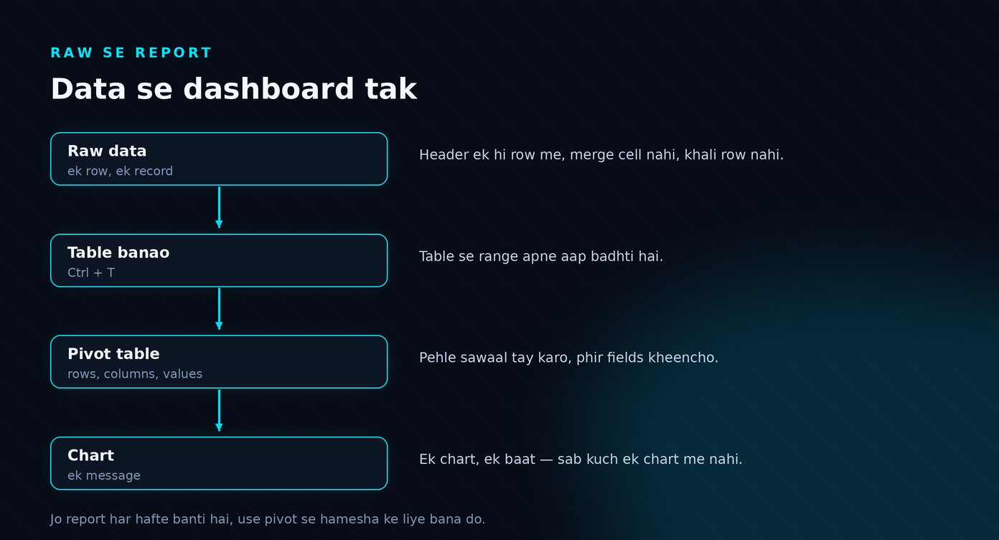

Excel Formulas: 15 Formulas Jo Office Kaam Aasan Kar Dein
ज़्यादातर office का काम Excel में होता है — बिक्री की report, attendance, stock, budget, salary sheet. और ज़्यादातर लोग इनमें वही काम हाथ से करते हैं जो एक formula से अपने आप हो सकता है: हर महीने 400 rows को filter करके जोड़ना, दो sheets में नाम मिलाना, या "अगर amount 5000 से ज़्यादा है तो commission" वाली शर्त हर row में लगाना।
इस guide में मैं वही 15 formulas बताऊँगा जो असली काम में सबसे ज़्यादा आते हैं — sum और count वाले, शर्त वाले, lookup वाले, text साफ़ करने वाले और date वाले। साथ में pivot table, error messages का मतलब, पाँच आम गलतियाँ, और मेरा अनुभव। हर formula का उदाहरण है, ताकि आप उसे सीधे अपनी sheet में बदलकर इस्तेमाल कर सकें।
छोटा जवाब: शुरुआत के लिए पाँच formulas काफ़ी हैं — SUM, SUMIF, COUNTIF, IF और XLOOKUP. इनसे जोड़ना, शर्त के साथ जोड़ना, गिनना, फैसला लेना और दूसरी table से data लाना — चारों हो जाता है। जब यह पक्की हो जाएँ, तो pivot table सीखें; वह 15 formulas से ज़्यादा समय बचाता है।
Formula ka basic ढाँचा
हर formula = से शुरू होता है। उसके बाद function का नाम और bracket में उसके inputs आते हैं — जैसे =SUM(A2:A10). Cell reference में A2 का मतलब column A और row 2.
एक चीज़ जो सबसे ज़्यादा confusion पैदा करती है — $ का निशान। A2 को जब नीचे खींचते हैं, तो वह A3, A4 बनता जाता है। पर $A$2 खींचने पर भी वहीं रहता है। जब आप किसी fixed cell (जैसे tax rate) का हवाला दें, तो $ लगाएँ — वरना हर row में reference खिसक जाएगा और नतीजा गलत आएगा।
ऑपरेटर भी सीधे हैं: + - * / गणित के लिए, & दो text जोड़ने के लिए, और > < = <> तुलना के लिए।
15 formulas, chaar parivar me
जोड़ना और गिनना
1. SUM — =SUM(C2:C100) आपके खर्च का कुल। सबसे सादा और सबसे ज़्यादा इस्तेमाल होने वाला।
2. SUMIF — शर्त के साथ जोड़ना: =SUMIF(B2:B100, "Delhi", C2:C100) यानी जहाँ column B में "Delhi" है, उन rows का column C जोड़ो। एक शर्त से ज़्यादा चाहिए तो SUMIFS लें।
3. COUNTIF — गिनना: =COUNTIF(D2:D100, "Pending"). कितने orders pending हैं, यह एक सेकंड में पता चल जाता है।
4. AVERAGEIF — शर्त के साथ औसत: =AVERAGEIF(B2:B100, "Mumbai", C2:C100). किस शहर का average order value ज़्यादा है, यह इससे साफ़ होता है।
फैसला लेना
5. IF — =IF(C2>5000, "High", "Low"). शर्त सच हो तो पहला, झूठ हो तो दूसरा।
6. IFS — कई शर्तें एक साथ: =IFS(C2>10000, "A", C2>5000, "B", TRUE, "C"). Nested IF से यह पढ़ने में बहुत आसान है, क्योंकि हर शर्त अपनी line में है।
7. IFERROR — error छिपाने के लिए नहीं, संभालने के लिए: =IFERROR(XLOOKUP(A2, Sheet2!A:A, Sheet2!B:B), "Not found"). खाली या गलत reference पर sheet में #N/A की जगह साफ़ message दिखता है।
दूसरी table से data लाना
8. XLOOKUP — आज सबसे अच्छा lookup: =XLOOKUP(A2, Products!A:A, Products!C:C, "N/A"). पहला argument क्या ढूँढना है, दूसरा कहाँ ढूँढना है, तीसरा क्या लौटाना है, चौथा न मिलने पर क्या दिखाना है।
9. VLOOKUP — पुराना लेकिन अब भी हर जगह मिलता है: =VLOOKUP(A2, Products!A:D, 3, FALSE). इसमें हमेशा बाईं तरफ़ से खोज होती है और column number याद रखना पड़ता है — इसीलिए XLOOKUP बेहतर है।
10. INDEX + MATCH — जब पुराने Excel में XLOOKUP न हो: =INDEX(Products!C:C, MATCH(A2, Products!A:A, 0)). यह combination लंबे समय तक standard रहा है।
Text साफ़ करना
11. TRIM — आगे-पीछे की extra spaces हटाता है: =TRIM(A2). Lookup fail होने की सबसे आम वजह यही invisible space होती है।
12. LEFT / RIGHT / MID — text का हिस्सा: =LEFT(A2, 3) पहले तीन characters, =MID(A2, 4, 2) चौथे से दो।
13. TEXTJOIN — कई cells एक में: =TEXTJOIN(", ", TRUE, A2:C2). & से बेहतर, क्योंकि खाली cells छोड़ सकते हैं।
Date और number
14. TEXT — number को format में दिखाना: =TEXT(A2, "dd-mmm-yyyy") या =TEXT(B2, "₹#,##0"). ध्यान दें — TEXT नतीजे को text बना देता है, इसलिए उस पर फिर गणित न करें।
15. EOMONTH और DATEDIF — महीने का आख़िरी दिन: =EOMONTH(A2, 0). दो dates के बीच का फर्क: =DATEDIF(A2, TODAY(), "M") महीनों में, या "Y" सालों में।
XLOOKUP kyun VLOOKUP se behtar hai
VLOOKUP में तीन दिक्कतें हैं। पहला — वह सिर्फ़ बाईं तरफ़ से खोज सकता है, यानी lookup column data के बाईं ओर होना चाहिए। दूसरा — column number हाथ से लिखना पड़ता है, और जब बीच में नया column जुड़े तो सब formulas गलत हो जाते हैं। तीसरा — न मिलने पर वह #N/A देता है, जिसे अलग से संभालना पड़ता है।
XLOOKUP तीनों हल करता है: किसी भी तरफ़ से खोज, column का नाम सीधे range से, और चौथे argument में "न मिले तो यह दिखाओ". अगर आपका Excel उसे support करता है, तो VLOOKUP छोड़ दें।
Dynamic arrays: FILTER, UNIQUE aur SORT
नए Excel में एक formula पूरी list लौटा सकता है। =UNIQUE(B2:B500) सारे अलग-अलग शहरों की list दे देता है, =SORT(...) उसे सजा देता है, और =FILTER(C2:C500, B2:B500="Delhi") सिर्फ़ दिल्ली वाली rows निकाल देता है।
इनका फायदा यह है कि list अपने आप update होती रहती है — नई row जुड़ी तो नतीजा भी बदला। पहले यह काम filter और copy-paste से होता था, और हर बार दोहराना पड़ता था। ध्यान रखें कि ये formulas नीचे की खाली cells में अपना नतीजा फैलाते हैं, इसलिए उन cells में कुछ और न लिखें, वरना #SPILL! error आएगा।
Pivot table: 15 formulas se zyada

Pivot table बिना formula लिखे summary बनाता है। मान लीजिए 5,000 rows का sales data है और चाहिए — हर शहर का हर महीने का total. Formula से यह काम लंबा है; pivot में चार fields खींचने से हो जाता है: शहर rows में, महीना columns में, amount values में।
पाँच आदतें जो pivot को भरोसेमंद बनाती हैं। पहला — data को Ctrl + T से table बनाएँ, ताकि नई rows अपने आप जुड़ें। दूसरा — header एक ही row में रखें, merged cells न हों। तीसरा — हर column में एक ही type का data रखें (date column में सिर्फ़ date). चौथा — खाली rows या subtotal rows data के बीच में न छोड़ें। पाँचवाँ — pivot बनाने से पहले सोचें कि सवाल क्या है; बिना सवाल के pivot सिर्फ़ number का ढेर बन जाता है।
Formatting jo galtiyan pakadti hai
दो चीज़ें formulas से भी ज़्यादा काम आती हैं। पहली — conditional formatting: किसी column पर rule लगाएँ कि 10,000 से ज़्यादा हरा और 1,000 से कम लाल दिखे। इससे बड़ी sheet में गलती आँख से दिखने लगती है, बिना हर cell पढ़े।
दूसरी — data validation: किसी column में सिर्फ़ तय values की list allow करें, या date को आज से आगे न जाने दें। जब तीन लोग एक ही sheet भरते हैं, यह एक setting आधी गलतियाँ रोक देती है — जैसे status column में "Completeed" लिखा जाना।
इन दोनों की एक ही सोच है: जो गलती formula से पकड़ी जा सकती है, उसे इंसान की नज़र पर न छोड़ें। Sheet ऐसी बनाएँ कि गलत entry मुश्किल हो, और सही entry अपने आप साफ़ दिखे।
Error messages ka matlab
| Error | मतलब | क्या करें |
|---|---|---|
| #N/A | Lookup में value नहीं मिली | Spaces, type और exact match जाँचें |
| #VALUE! | Text को number की तरह इस्तेमाल किया | Cell का type ठीक करें |
| #REF! | Reference हट चुका है | Column delete से बचें |
| #DIV/0! | शून्य से भाग | IFERROR या denominator जाँचें |
| #NAME? | Function का नाम गलत | Spelling और quotes जाँचें |
paanch galtiyan
1. हर जगह हाथ से value लिखना। जो number किसी और cell से आ रहा है, उसे हाथ से न लिखें — reference दें। वरना source बदलने पर report पुरानी रह जाएगी।
2. Merged cells। Sorting, filter और pivot सब टूटते हैं। Merged cells की जगह "Center Across Selection" इस्तेमाल करें।
3. पूरा column reference। A:A आसान है पर बहुत बड़ी sheet में धीमा। जहाँ मुमकिन हो, सीमित range या table reference लें।
4. Text और number मिलाना। "5000" और 5000 अलग हैं। जब lookup fail हो, तो पहले type जाँचें — ISTEXT या ISNUMBER से।
5. Formula से बदला data copy करके values paste करना भूलना। जब sheet किसी और को भेजें, तो अक्सर values paste करना ठीक रहता है — वरना उनके यहाँ references टूट सकते हैं।
Excel के formulas अगर रोज़ काम आते हैं, तो SQL भी सीखें — same सोच, बड़े data पर। SQL guide से शुरुआत करें, और data के साथ पूरा करियर बनाना हो तो data science roadmap पढ़ें।
Shortcuts jo speed badhate hain
Excel में आधा समय mouse से बचाया जा सकता है। ये दस shortcuts रोज़ काम आते हैं।
| Shortcut | काम |
|---|---|
| Ctrl + T | Range को table बनाना |
| Ctrl + Shift + L | Filter चालू या बंद |
| Alt + = | अपने आप SUM formula |
| F2 | Cell में edit मोड |
| F4 | Reference पर $ लगाना |
| Ctrl + Arrow | Data के आख़िरी कोने तक |
| Ctrl + Shift + Arrow | पूरी range चुनना |
| Ctrl + PgUp/PgDn | Sheets बदलना |
| Alt + Enter | एक cell में नई line |
| Ctrl + Z / Y | Undo और Redo |
एक आदत और जोड़ें — जब किसी sheet पर हफ़्ते में एक घंटे से ज़्यादा लगे, तो पहले पाँच मिनट यह सोचें कि इसमें से कौन सा हिस्सा हर बार वही है। वही हिस्सा formula, pivot या macro बन जाता है। यही सोच धीरे-धीरे पूरे office के काम को तेज़ कर देती है।
F4 सबसे ज़्यादा समय बचाता है — formula में reference चुनकर F4 दबाने से $ अपने आप लग जाता है, और आपको याद नहीं रखना पड़ता कि कहाँ लगाना है। शुरुआत में रोज़ दो shortcuts की आदत डालें; एक हफ़्ते में हाथ अपने आप चलने लगेंगे।
Mera anubhav
मैंने कई साल एक ही रिपोर्ट हाथ से बनाई — हर महीने filter, copy, paste, total. उसमें डेढ़ घंटा लगता था और हर बार एक-दो गलती होती थी। जब मैंने उसे pivot table और चार formulas में बदला, वही काम 10 मिनट का हो गया, और सबसे बड़ा फायदा यह हुआ कि गलती की गुंजाइश लगभग खत्म हो गई।
दूसरी बात जो मैंने सीखी: formula को छोटे हिस्सों में जाँचना। जब एक लंबा formula गलत नतीजा दे, तो उसके हर हिस्से को अलग cell में लिखकर देखें। 90% बार गलती किसी एक reference में होती है — अक्सर $ की कमी।
तीसरी बात: sheet को दूसरे के लिए बनाएँ। Heading साफ़, हर column का एक ही format, और ऊपर एक छोटी line जो बताए कि यह report क्या दिखाती है। जो sheet खुद समझ में आए, वही अच्छी sheet है।
नतीजा
Excel में 15 formulas और एक pivot table — इतना सीख लेने पर office का ज़्यादातर repetitive काम खत्म हो जाता है। शुरुआत पाँच से करें: SUM, SUMIF, COUNTIF, IF और XLOOKUP. जब इनमें उँगली चलने लगे, तो pivot table सीखें और हर हफ़्ते वाली report को एक बार में बना दें। यह एक बार का निवेश है जो हर महीने समय लौटाता रहता है।
अक्सर पूछे जाने वाले सवाल
क्या XLOOKUP हर Excel में चलता है?
नए versions में हाँ। पुराने versions में वह नहीं मिलेगा — वहाँ INDEX + MATCH इस्तेमाल करें।
क्या Google Sheets में ये formulas चलते हैं?
लगभग सब चलते हैं। कुछ नाम अलग हैं और XLOOKUP की जगह कभी-कभी अलग function लगता है, पर सोच वही है।
क्या formula सीखने से नौकरी मिलती है?
अकेले नहीं, पर यह सबसे तेज़ दिखने वाला हुनर है। Analyst और operations के काम में Excel की गति सीधे काम की गति बनती है।
Pivot table या formulas — पहले क्या?
पहले पाँच बुनियादी formulas, फिर pivot। Pivot तब समझ आता है जब data की rows और columns की सोच साफ़ हो।
Sheet धीमी हो जाए तो?
पूरे column के references, बहुत सारे volatile formulas और बड़ी conditional formatting हटाएँ। ज़रूरत हो तो data को table में बदलें और formulas को सीमित range पर लगाएँ।